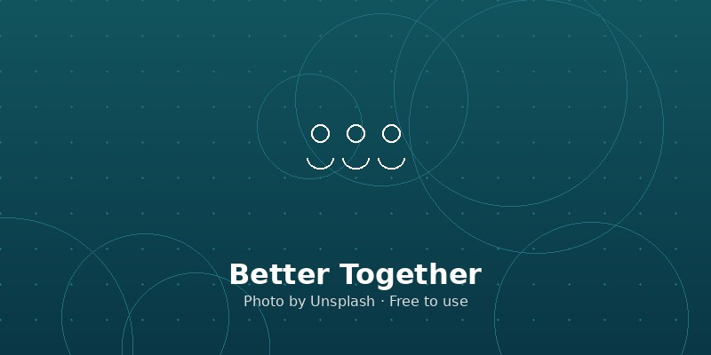

Dashboard Overview
See your saved jobs, submitted applications, interviews, offers, and recent activity all in one place.
Your Job Search, Organized and Visualized
JobTrack helps college students manage saved jobs, applications, notes, deadlines, and follow-up tasks without switching between platforms.
See your saved jobs, submitted applications, interviews, offers, and recent activity all in one place.
Search jobs and narrow results by location, salary, experience level, and visa sponsorship needs.
Move jobs through stages like saved, applied, interview, offer, and rejected using a Kanban board.
Store deadlines, interview details, personal notes, and next-step tasks for each job you track.
Find job opportunities that match your goals and save them to your board.
Update each job as you apply, interview, or receive a decision.
Use summary analytics to understand where your job search is heading.
Job hunting information is often scattered across LinkedIn, Handshake, email, calendars, and personal notes. JobTrack brings those pieces together so students can feel more organized and in control of their career search.
